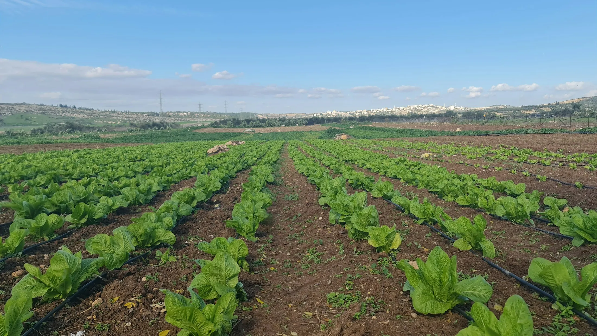
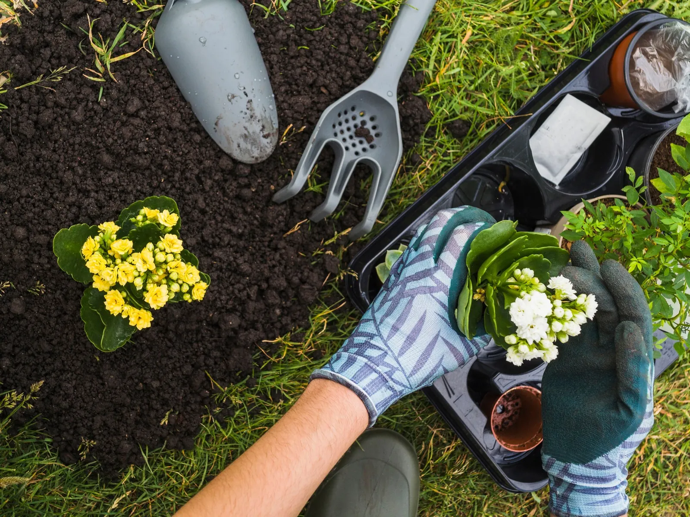

Clima
Pronóstico de cinco días
Cargando el clima…
Datos de Open-Meteo

Tener una huerta no es cuestión de tener campo ni buena mano. Es acompañar a la naturaleza: cultivar sin agroquímicos, cuidar el suelo y el agua, mezclar muchas especies y guardar la propia semilla.
Qué hay en la guía
Asistente
Pronóstico de cinco días
Cargando el clima…
Datos de Open-Meteo
Calculando…
Pautas de riego del INTA en Riego por goteo. Cálculo con la evapotranspiración FAO de Open-Meteo.
Consejos basados en La Huerta Orgánica y Mi casa, mi huerta, INTA.
Qué sembrar este mes
Primavera y verano. Se actualiza solo según la fecha.
Calendario→Meses según el calendario de siembra de ProHuerta para la región pampeana.
Tu diario
Cargá lo que sembraste y anotá cómo va. El asistente calcula la etapa, los días para cosechar y qué cuidado necesita.
Tus plantas y fotos se guardan solo en este navegador.
Lo que cambia
Un patio con pasto alto o un balcón vacío alcanzan. Con un plan simple y la estación justa, en una temporada ya hay cosecha.

 AntesDespués
AntesDespués
Imágenes de referencia, no son el mismo lugar.
Fuente oficial
Los datos de siembra, cuidado y riego vienen de los manuales del programa ProHuerta, que acompaña huertas familiares, escolares y comunitarias en todo el país.
Publicaciones del repositorio del INTA, con licencia CC BY-NC-SA. Tapas y datos tomados de cada ficha del repositorio. Lo que marcás como leído se guarda en este navegador.
Desde cero

Consumo diario, algo puntual o una actividad con chicos.
Un cantero o unas macetas alcanzan para empezar.
Preparar, sembrar, calendario, cuidar y cosechar.
Cada vez que cambia la estación.
Preguntas
Lo que más se pregunta al empezar la primera huerta.
La primera temporada
La primera temporada casi nunca sale como uno la imaginó, y está perfecto. Lo que no cosechás en verduras lo cosechás en oficio.Ver qué toca este mes